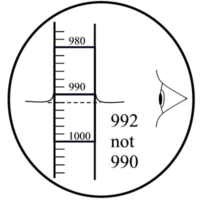

Protocol Title
Last edited: 06NOV2023 NP
Complete soil texture analysis– for total sand, total silt & total clay. The hydrometer method determines the particle size distribution of the fine earth soil particles. The hydrometer measures the specific gravity, which depends on the mass of the solids in suspension. Taking measurements at specific times after suspending all particles in a column allows you to measure the suspended mass of the silt & clay together and the clay alone. Fractions are calculated by finding the difference from the initial mass of the complete sample.
Materials
- Pestle & mortar
- Dust mask
- #4 Sieve, 2mm
- Analytical balance (two digit)
- 250ml wide mouth Nalgene bottles with lids
- Not the narrower neck bottles, as particles get stuck on the longer shoulder of the bottle when tipping it upside down
- 5% SHMP (Sodium hexametaphosphate)
- Mixer - set at ~30 RMP
- Sedimentation columns (1L)
- Blank sedimentation column with 100ml 5% SHMP
- Prepared at the same time as samples – same batch of SHMP
- DI water – room temperature from the carboy, not faucet
- Amyl alcohol in a dropper bottle
- Adding a drop or two of amyl alcohol after mixing will help eliminate foam on the surface in the sedimentation column. The foam makes it difficult to read the liquid level on the hydrometer.
- Plunger (stirring rod with rubber disk on one end) for mixing in the columns
- Bouyoucos hydrometer (measures g/L)
- Thermometer
- Timer
Sample Preparation Procedure
- Pulverize air dried sample with a pestle and mortr and pass through a 2mm sieve.
- Also acceptable to pulverize oven dried samples, but they left out to likely absorbed moisture from the air.
Wearing a face mask while pulverizing is recommended. Note that all of the sample may not pass through the sieve, do not crush the coarse fragments to force them through. You can hear the pestle hitting coarse fragments – it makes a different sound (louder and sharper). Stop pulverizing when you hear this and sieve the soil that is pulverized.
- Collect and remove the coarse fragments that do not pass the 2mm sieve as they are not used in the texture analysis.
- You may note what percentage of coarse fragments is in the sample, their size, shape, hardness and mineralogy. This is data that can be useful, though is not necessary for this texture analysis.
- Prepare to measure 30-50g of the dried and pulverized soil sample by gently mixing the closed bag of soil so that it is as homogenous as possible. Gravity fractionates the particles, with smaller particles settling out to the bottom of the bag. Do your best to obtain a representative sample.
One way to mix the sample is to hold the closed side of the bag in one hand and the bottom in the other, and mix it upside down, roll it side to side, rolling it around.
Weigh 30-50g using the 2-digit analytical balance. Tare the weight of the Nalgene bottle, add and measure the weight of the dry soil. Document the weight of the soil and the sample name on the bottle as well as in your lab book just in case the mixing process wears some of that information off the bottle.
Add precisely 100 ml 5% SHMP to each bottle then add ~70ml DI water or until the bottle is no more than ¾ full.
- There needs to be enough room for the slurry to slosh back and forth while laying on the side of the bottle in the mixer.
Prepare a blank mixture in another Nalgene with 100ml 5% SMHP and DI water at the same time as you are prepping the other samples to ensure you will use the same mixture of SHMP that you prepared the soil slurries with. Prepare a blank each time you prepare a set of samples.
Tighten the lids of the bottles and vigorously shake each so that all soil comes free from the bottom of the bottle.
- This is a good time to ensure that the lids are secure.
Lay the bottles on their sides in the basket on the mixer and set it at ~30 RMP.
- Smaller bottles may need to be mixed at a higher rate to get the necessary sloshing action. This sloshing action with the SHMP is what disaggregates the aggregated particles.
- Mix for at least 8 hours (or overnight). Longer is no problem.
Column Preparation Procedure
- Rinse the sedimentation columns with DI water.
- Pour each bottle of soil slurry into a labeled sedimentation column. It can be a challenge to get all of the soil particles out of the bottle. Spray and rinse with the DI squirt bottle. Remember to also rinse the sediment on the Nalgene lid into the column.
One technique to get the last bits out of the bottle is to hold the Nalgene bottle upside down above the column and spray the DI up into and onto the sides of the bottle. While doing this, rotate the Nalgene around. The particles stuck on the shoulder of the bottle should be flushed out by the water flowing down and out of the upside down bottle.
- Fill all columns precisely to 1L with DI water.
- Room temp DI water should be used from a carboy. I find the building DI water from the faucet is a warmer temp. If DI water is taken from the faucet to fill the columns, provide time to let it acclimate to room temp (a day).
- Prepare the blank column with the blank from the Nalgene bottle. Give a rinse to the bottle as well and fill the column to 1L.
Hydrometer Run Procedure
3 readings are taken for this complete texture analysis. 40 seconds, 4 hours, and 8 hours. Plan accordingly!
Be sure to document the time that each sample is begun at. Keeping a running stopwatch (on a phone) is one method. Document the start time of each sample (0 min, 4 min, 8 min, etc). 3 or 4 minutes between each sample is good spacing. - 40 Second: The first reading measures the total of silt and clay, combined. At 40 seconds, the sands will have fallen and dropped out of the solution. - 4 Hour: This is an additional reading – verify if this reading is needed or not. - 8 Hours: This reading measures suspended clay. Sands and silts will have fallen out.
- Record the temperature of the mixed blank solution. Mixing instructions follow:
- While holding the column with one hand to stabilize it, vigorously mix with the plunger. Settled silt and clay particles may form a cake on the bottom, so look closely that there is not a layer of sediment still stuck at the bottom as you plunge.
- Be sure to gently lift and mix the sample all the way to the upper half of the column too; don’t just mix in the lower portion of the column. Try to get the sediment in column as homogenized as possible.
- At the moment you remove the plunger from the surface of the sample, time begins at 0 seconds. Start a stopwatch and keep a record of the time started. Soon thereafter, gently lower the hydrometer into the sample, and gradually release your grip until you find where bobbing is minimal. At the time of 40 seconds your hydrometer should be floating steady. Take the reading from the top-most level of the liquid where it rises up and onto the hydrometer – read the liquid level.
- Read where the top of the water line rises up on the side of the hydrometer. Read to the nearest whole number or round to a half if need be. Not less than a half number.

- Gently take the hydrometer out and rinse it and the plunger with DI water before beginning the next sample.
- Consider laying down a towel next to your columns so you can rinse onto that instead of going back and forth to the sink.
- A reading should also be taken from the blank at the respective time, after mixing. The blank should read 5, meaning 5 g/L (100 ml of 5% SHMP was used in the blank from the 1 L mixture you made having 50 g SHMP added.)
- If this reading is off, know that room temperature is a variable that can affect this. When and if adjustment is needed, add 0.4 g/L for each degree above 20 degrees Celsius or subtract 0.4 g/L for each degree below 20 degrees C.
- The second/third reading will occur 4.0 and/or 8.0 hours after the start. No mixing or plunging will be done as this measurement will measure the total clay suspended, or how much silt has dropped out during the settling period. Again, gently insert the hydrometer as to not drop it, minimizing how much it bobs. Read from the top of the liquid level and document.
Calculations
(Total sample) – (reading at 40 seconds) = total sand
(Total sample) – (total clay) – (total sand) = total silt
Reading at 8 hour = total clay
Units: grams / grams total sample - as in, grams of given texture class per grams total sample